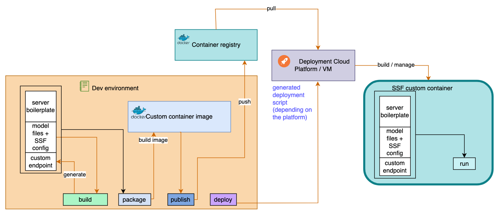
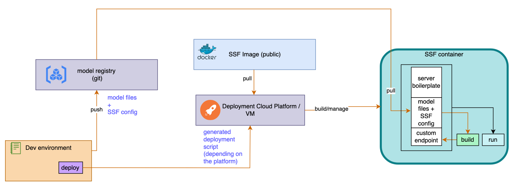

Walkthrough
This walkthrough will show how to serve an application using SSF and deploy it on Gcore to use IPUs. As a prerequisite we need to follow the installation instructions to install and enable the Poplar SDK with Poptorch in the environment.
Select a model
For this example we deploy a pre-trained question answering model from Huggingface.
Distilbert-base-cased-distilled-squad will do the trick 🤗
The model itself can be imported from the optimum-graphcore library as an inference pipeline:
from optimum.graphcore import pipeline
question_answerer = pipeline(
"question-answering", model="distilbert-base-cased-distilled-squad"
)
question and context strings.
The output is also a dictionary containing an answer string, the score, and the start and end positions of the answer in the context string.
Implement the application interface
To interface our model with SSF we need to implement the application interface SSFApplicationInterface.
The following file my_app.py shows the code needed for this:
from optimum.graphcore import pipeline
import logging
from ssf.application import SSFApplicationInterface
from ssf.utils import get_ipu_count
from ssf.results import RESULT_OK
logger = logging.getLogger()
class MyApplication(SSFApplicationInterface):
def __init__(self):
self.question_answerer: pipeline = None
self.dummy_inputs_dict = {
"question": "What is your name?",
"context": "My name is Rob.",
}
def build(self) -> int:
if get_ipu_count() >= 2:
logger.info("Compiling model...")
build_pipeline = pipeline(
"question-answering", model="distilbert-base-cased-distilled-squad"
)
build_pipeline(self.dummy_inputs_dict)
else:
logger.info(
"IPU requirements not met on this device, skipping compilation."
)
return RESULT_OK
def startup(self) -> int:
logger.info("App started")
self.question_answerer = pipeline(
"question-answering", model="distilbert-base-cased-distilled-squad"
)
self.question_answerer(self.dummy_inputs_dict)
return RESULT_OK
def request(self, params: dict, meta: dict) -> dict:
result = self.question_answerer(params)
return result
def shutdown(self) -> int:
return RESULT_OK
def is_healthy(self) -> bool:
result = self.question_answerer(self.dummy_inputs_dict)
return result["answer"] == "Rob"
def create_ssf_application_instance() -> SSFApplicationInterface:
return MyApplication()
Now let's explain this step-by-step.
SSF will serve an instance of MyApplication (by calling create_ssf_application_instance).
To implement the interface we need to define the 5 methods build, startup, request, shutdown and is is_healthy:
- In the
__init__method we define a placeholder for thequestion_answerer. We also define a dummy input dictionary that will be used to test the pipeline. - The
buildmethod is called when issuing gc-ssf build. It should contain any preliminary steps that we want to happen offline, before running the server.
Since we are using IPUs, we can compile the model in advance to save time at server startup.
To do that, we should call thepipelineobject at least once (the first call triggers compilation). The IPU compilation generates a cacheexe_cache/, we explain later how to package this cache alongside the server. HuggingFace libraries will also download and cache model weights. We may not have access to IPUs to run thebuildstep outside of our deployment environment - we can check this by using the utility functionget_ipu_count. If we don't have access to IPUs it will skip compilation which will then be triggered bystartupwhen deployed.
Note: we usereturn RESULT_OKfrom ssf return codes, this is equivalent toreturn 0def build(self) -> int: if get_ipu_count() >= 2: logger.info("Compiling model...") build_pipeline = pipeline( "question-answering", model="distilbert-base-cased-distilled-squad" ) build_pipeline(self.dummy_inputs_dict) else: logger.info( "IPU requirements not met on this device, skipping compilation." ) return RESULT_OK - The
startupmethod is called every time the server starts (when issuing gc-ssf run) so it can contain any warmup code we need. We instantiate and call the pipeline with dummy inputs: if the compilation cache exists, this first call will have the effect of attaching the model to available IPUs. If not, it will compile it first. Since the lifespan ofself.question_answereris the same asMyApplication, the model will stay attached to the IPUs as long as theMyApplicationinstance is alive. - The
requestmethod is the function executed by our API call. It is important to understand what will be in the dictionariesparams(the inputs) andreturn(the output) as SSF will use it later to generate the API. -
Any resource freeing can be carried out in the
shutdownmethod. We have left it empty: -
Finally,
is_healthywill be called periodically by our server. If it fails, the server will try to kill and restartMyApplication. As an example we verify that we get an expected output from a known input:
Write SSF config
The SSF config is the point of contact between our application and SSF. This will define all the metadata, the requirements (such as Python libraries needed for our application, the base Docker image to use, and so on), and also define our API.
The SSF config folder can be considered the primary application folder or context. All files and modules should be specified relative to the SSF config folder.
The current working directory will be set to the application module folder before SSF calls any of the application entry points (build or request etc.).
Let's create ssf_config.yaml :
# Copyright (c) 2023 Graphcore Ltd. All rights reserved.
ssf_version: 1.0.0
application:
id: qa_api
name: Question Answering API
desc: A very simple QA API
version: 1.0
module: my_app.py
ipus: 2
trace: True
artifacts: []
dependencies:
python: git+https://github.com/huggingface/optimum-graphcore.git@97c11c3
package:
inclusions: [exe_cache/]
exclusions: []
docker:
baseimage: "graphcore/pytorch:latest"
endpoints:
- id: QA
version: 1
desc: Question answering model
custom: ~
inputs:
- id: context
type: String
desc: Context
- id: question
type: String
desc: Question
outputs:
- id: answer
type: String
desc: Answer in the text
- id: score
type: Float
desc: Probability score
Now let's explain the main lines:
-
Under
Since we are using IPUs, let's check the resources used. The distillbert-base IPU config indicates 2 IPUs. With this config line, SSF will verify the system can acquire 2 IPUs when running the commandapplication:
moduletells us where to find the interface that we have implemented:runortest. Our model needs theoptimum-graphcorepackage, we can specify anypippackages here (as a list or a requirements file path): Thepackagesection refers to the gc-ssf package command, we can edit how we want SSF to build our container. We can include any files used by our application (and exclude some others), glob patterns are supported. Let's include the compilation cache. Finally we want to use Graphcore's base image with pre-installed PyTorch, so we can runoptimum-graphcorewithout issue: -
Under
This endpoint path will beendpoints:
This is how SSF will generate our API.v1/QA. Now let's remember our applicationrequest(self, params: dict, meta: dict)method. We want to describe here theinputsdictionaries using the names of the keys (context,question) and ssf types. We also want to describe theoutputs. Notice we are only selectinganswerandscorefrom our results as we are not interested in returning thestartandendkeys.
Our application is officially ready! 
Now let's see what SSF can do.
Use SSF
We should now have the following file structure:
We can use the SSF commands for several different scenarios. First we should decide which commands we want to run locally (on our current machine) and which commands will run on the remote (deployment) machine.Let's look at a couple of examples.
Example 1
In this first example we build our server locally and deploy its image via Docker Hub. The workflow can be summarised as follows:
- The
initandbuildsteps are run locally, to compile the model before packaging. - The
packagestep creates the container image locally, andpublishpushes it to Docker Hub. - Finally
deploysends and executes the deployment script on our deployment target. In the previous step, the container image was packaged in such a way to ensure it executesrunwhen started on the remote machine.
Let's build our container:
We use --package-tag to replace the tag from the config with our Docker username since we will push the image to Docker hub.
2023-05-30 17:52:10,773 1009745 INFO > Config ssf_config.yaml (cli.py:453)
2023-05-30 17:52:10,778 1009745 WARNING startup_timeout not specified in application. Defaulting to None (load_config.py:287)
2023-05-30 17:52:10,778 1009745 WARNING max_batch_size not specified in application. Defaulting to 1 (load_config.py:287)
2023-05-30 17:52:10,778 1009745 WARNING name not specified in application.package. Defaulting to Question answering API-1.0.tar.gz (load_config.py:287)
2023-05-30 17:52:10,778 1009745 WARNING run not specified in application.package.docker. Defaulting to (load_config.py:287)
2023-05-30 17:52:10,779 1009745 INFO > ==== Init ==== (init.py:17)
2023-05-30 17:52:10,779 1009745 INFO > Cleaning_endpoints (init.py:19)
2023-05-30 17:52:10,779 1009745 INFO > Clean application (init.py:22)
2023-05-30 17:52:10,779 1009745 INFO > ==== Build ==== (build.py:25)
2023-05-30 17:52:10,779 1009745 INFO > Generate_endpoints (build.py:39)
2023-05-30 17:52:10,782 1009745 INFO > Load application (build.py:42)
2023-05-30 17:52:10,782 1009745 INFO Creating application interface (application.py:111)
2023-05-30 17:52:10,782 1009745 INFO Checking application dependencies (application.py:112)
2023-05-30 17:52:10,782 1009745 INFO installing python packages git+https://github.com/huggingface/optimum-graphcore.git (utils.py:139)
2023-05-30 17:52:18,980 1009745 INFO Loading Question answering API application from /home/repos/simple-server-framework/examples/walkthrough/my_app.py with module id Question answering API (application.py:119)
2023-05-30 17:52:18,981 1009745 INFO loading module /home/repos/simple-server-framework/examples/walkthrough/my_app.py with module name Question answering API (utils.py:161)
[...]
2023-05-30 17:52:25,540 1009745 INFO instance=<Question answering API.MyApplication object at 0x7f35c0027c70> (build.py:45)
2023-05-30 17:52:25,540 1009745 INFO > Build application (build.py:47)
2023-05-30 17:52:25,540 1009745 INFO Compiling model... (my_app.py:17)
Graph compilation: 100%|████████████████████████████████████████████████████████████████████████████████| 100/100 [00:01<00:00]
2023-05-30 17:52:32,930 1009745 INFO > ==== Package ==== (package.py:43)
2023-05-30 17:52:32,930 1009745 INFO > Packaging Question answering API to /home/repos/simple-server-framework/examples/walkthrough/.package/Question answering API (package.py:66)
2023-05-30 17:52:32,930 1009745 INFO > Package name Question answering API-1.0.tar.gz (package.py:67)
2023-05-30 17:52:32,930 1009745 INFO > Package tag deployment-test:latest (package.py:68)
2023-05-30 17:52:32,931 1009745 INFO > Package SSF from /home/repos/simple-server-framework/ssf (package.py:99)
2023-05-30 17:52:32,941 1009745 INFO > Package Application from /home/repos/simple-server-framework/examples/walkthrough (package.py:136)
2023-05-30 17:52:32,942 1009745 INFO > Package Endpoint files (package.py:150)
2023-05-30 17:52:32,943 1009745 INFO > Gathering pip requirements (package.py:169)
2023-05-30 17:52:32,943 1009745 INFO > Generate container image (package.py:211)
[...]
2023-05-30 17:53:34,043 1009745 INFO > Package: (package.py:245)
2023-05-30 17:53:34,043 1009745 INFO > Question answering API-1.0.tar.gz (from /home/repos/simple-server-framework/examples/walkthrough/.package/Question answering API/src) (package.py:246)
2023-05-30 17:53:34,043 1009745 INFO > Test run: 'cd /home/repos/simple-server-framework/examples/walkthrough/.package/Question answering API/src && ./run.sh' (package.py:247)
2023-05-30 17:53:34,043 1009745 INFO > Docker: (package.py:249)
2023-05-30 17:53:34,043 1009745 INFO > Run: 'docker run --rm -d --network host --name Question answering API deployment-test:latest' (package.py:250)
2023-05-30 17:53:34,043 1009745 INFO > Run with IPU devices: 'gc-docker -- --rm -d --name Question answering API deployment-test:latest' (package.py:253)
2023-05-30 17:53:34,043 1009745 INFO > Logs: 'docker logs -f Question answering API' (package.py:257)
2023-05-30 17:53:34,043 1009745 INFO > Stop: 'docker stop Question answering API' (package.py:258)
.package/ directory has been created, it contains the bundled server.
We can also verify that our server image was created during the package step with docker:
For the next step, a login to a Docker Hub registry is necessary.
SSF will log in temporarily to Docker when using --docker-username and --docker-password options.
But if you are already logged in with the correct account, you don't need these options for this step.
We can now publish our image on Docker hub.
Let's specify that we will push it with the same tag as during the package step using --package-tag
gc-ssf publish --config ssf_config.yaml --package-tag <docker-username>/<repo-name> --docker-username <docker-username> --docker-password <token>
env variable and use the option --add-ssh-key. For instance we can set it from a file:
Now let's run the deploy command with the following set of options. We also pass our Docker token via the option --docker-password which is needed to pull the image from our Docker hub repo to the remote VM (but this is not needed if you use a public repo).
gc-ssf deploy --config ssf_config.yaml --deploy-platform Gcore --port 8100 --deploy-gcore-target-address 123.456.789.0 --deploy-gcore-target-username ubuntu --docker-username <docker-username> --docker-password <token> --package-tag <username>/<repo-name>:latest --deploy-package
--deploy-packaged to specify that we want to deploy from the package that we published previously.
With this configuration our API endpoint should be available at
http://123.456.789.0:8100/v1/QA.
Since it's using FastAPI you can also test it with Swagger UI under the path http://123.456.789.0:8100/docs.
Under the hood, the deploy command will simply run a script on the Gcore VM to pull our custom image from Docker Hub, build and run it. The container entry point will issue the command run.
The following diagram summarises the operations of this first example. 
Example 2
Sometimes our local environment doesn't allow us to build containers, or we just want to experiment quickly. In this second example we won't build any container image. This means that the following workflow is possible:
This is made possible by storing our model in a repository and using a pre-built SSF image. First we need to set up a remote repository for our model. For example, using a GitHub account we could do: cd project_directory && git init
git add -A
git commit -m 'First commit'
git remote add origin git@github.com:your-username/project_directory.git
git push -u -f origin main
If you use a private repo, you will also need to allow your VM to clone from it.
To do that you will need to generate a GitHub deploy-key for your repo (or an equivalent access-limited SSH key).
Then, pass it with the deploy command using an env variable (for example MY_DEPLOY_KEY) and --add-ssh-key.
Now let's use deploy targeting our git repo:
MY_DEPLOY_KEY=$(cat github_deploy_key) gc-ssf deploy --config 'git@github.com:your-username/project_directory.git|ssf_config.yaml' --port 8100 --deploy-platform Gcore --deploy-gcore-target-address 123.456.789.0 --deploy-gcore-target-username ubuntu --add-ssh-key MY_DEPLOY_KEY
- Notice this time we are not using
--deploy-packaged, so SSF will deploy from the default public image.gc-ssf --helpcan be used to see the default SSF image used for deployment. Under the hood thedeploycommand will send and run a script on the Gcore VM. That will pull the public SSF image from Docker Hub, build and run it. The container entry point will clone our repo and issue the three commandsinit build run.
As in the first example, our API endpoint should be available at
http://123.456.789.0:8100/v1/QA.
You can also test it with Swagger UI under the path http://123.456.789.0:8100/docs.
The following diagram summarises the operations of this second example. 
Note that we only deployed a Docker container on a Gcore VM.
You can still SSH normally into your VM and use the usual Docker commands, for example docker container ls, docker log..., docker stop ....
Discussion: Example 1 vs Example 2
These examples have shown two different ways to deploy on the Gcore platform with SSF. Both are serving your application with the same API, but it's important to underline their differences.
Example 1 gives you more control:
By packaging your app in advance with SSF, you create your own custom Docker image. Then you can version your images via Docker hub. This method can also have runtime advantages. By building and packaging some runtime-generated files in advance (such as IPUs pre-compiled executables) you can save some precious server startup time.
Example 2 is quicker but can have some runtime impact:
By deploying your model with the default public image, you don't need to run Docker locally or worry about the packaging step, and your model can be versioned via git.
The server startup time might be impacted since the application build step will be triggered in the deployment environment before the server startup. Of course, you can still include cached files as part of the model repository. But depending on the size of the files you might prefer to package your app in advance and follow Example 1, for instance if you have a very large model to compile.